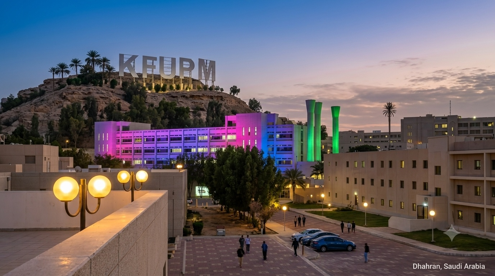
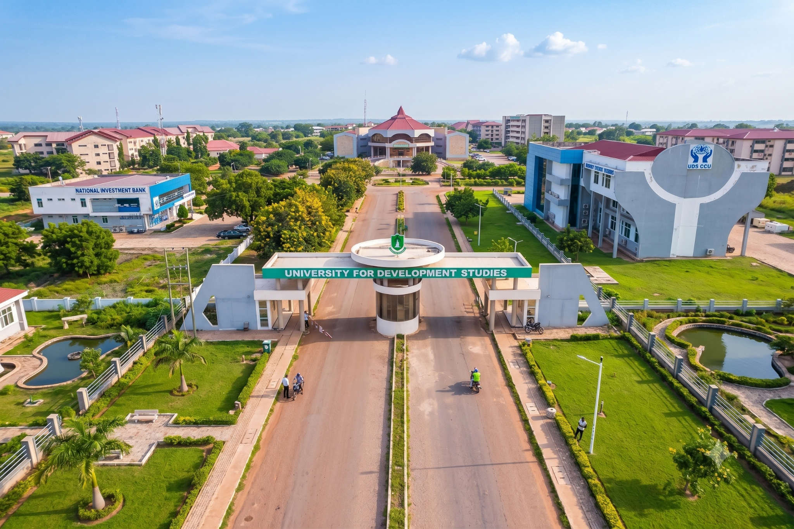

Education
My academic journey has provided the scientific foundation that supports my research, innovation, and future doctoral aspirations.

2024 – Present
Master of Science (MSc) in Life Sciences
King Fahd University of Petroleum and Minerals (KFUPM)
Currently pursuing advanced research in microbiology, molecular biology, nanotechnology and antimicrobial resistance, with emphasis on translational biomedical research.

2018 – 2022
Bachelor of Science (BSc) in Biochemistry
University for Development Studies (UDS), Ghana
Built a strong foundation in biochemistry, laboratory science, analytical techniques and scientific research, graduating with Second Class Upper Honors.